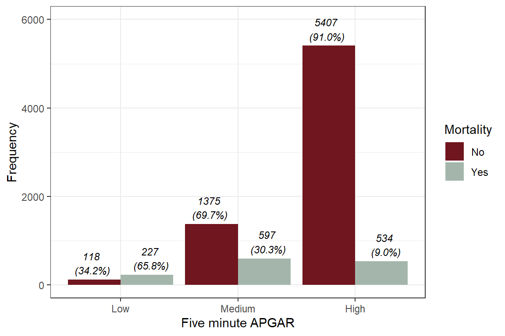
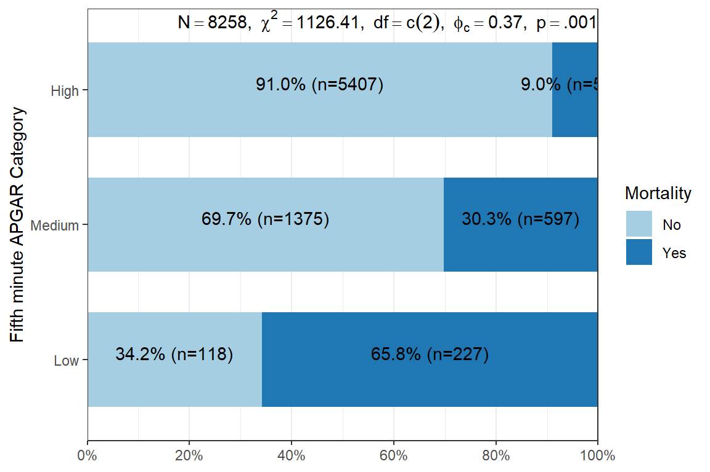
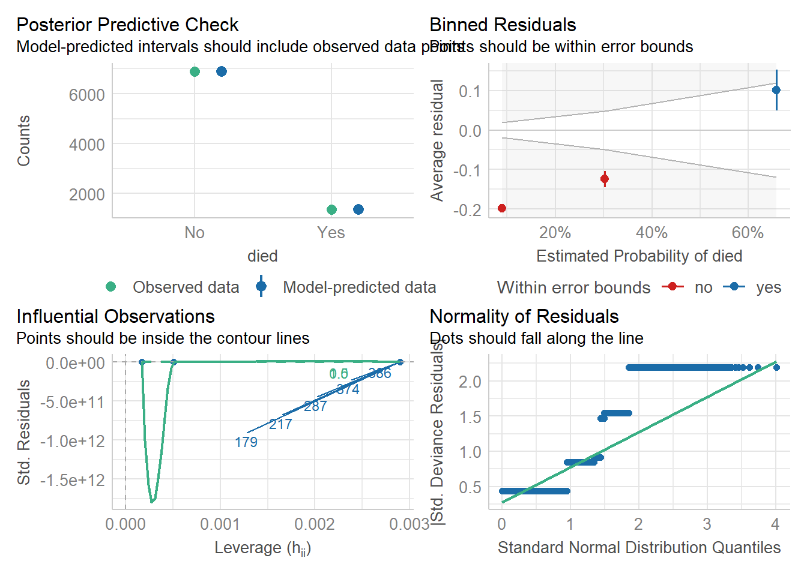
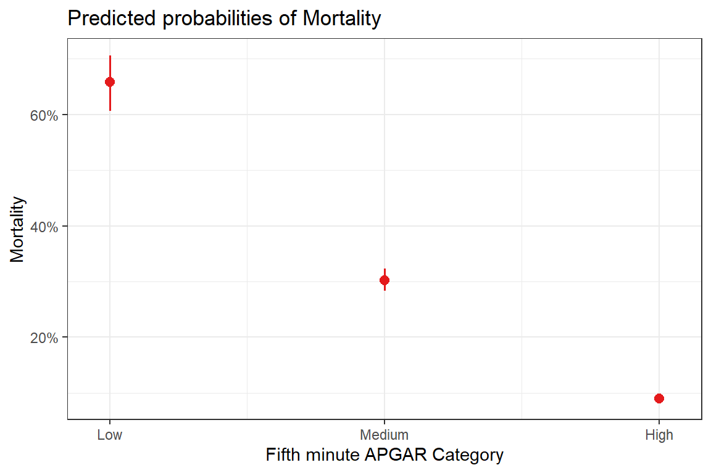
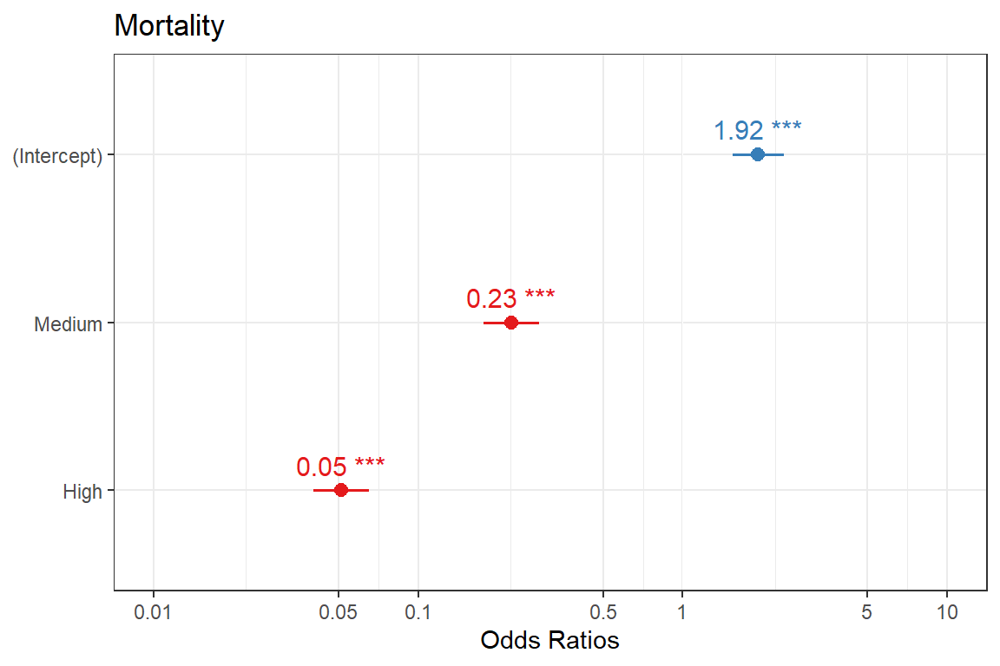

Characteristic |
N = 8,258 1 |
|---|---|
| Fifth minute APGAR Category | |
| Low | 345 (4.18%) |
| Medium | 1,972 (23.9%) |
| High | 5,941 (71.9%) |
| Mortality | 1,358 (16.4%) |
| 1
n (%) |
|
28 Single Categorical Predictor
This segment deals with the basic logistic regression using a single categorical predictor. We use the babiesdata. This is summarised first-MinuteFifth-minute below:
28.1 Research question
- What is the association between death and the fifth-minute APGAR Score categories?
- What are the predicted probabilities of death for the various fifth minute APGAR score categories?
- Do these probabilities differ significantly from each other?
28.2 Graphing variables
Code
babies %>%
group_by(apgar5cat, died) %>%
summarize(count = n(), .groups = "drop") %>%
group_by(apgar5cat) %>%
mutate(perc = count/sum(count)) %>%
ggplot(
aes(
x = apgar5cat,
y = count,
fill = died,
label = paste0(count, "\n (", scales::percent(perc), ")"))) +
geom_bar(stat = "identity", position = position_dodge())+
labs(x = "Five minute APGAR", y = "Frequency", fill = "Mortality")+
geom_text(
vjust = -.25,
color= "black",
size = 3,
fontface="italic",
position = position_dodge(width = 1))+
ylim(c(0, 6000)) +
scale_fill_manual(values = c("#70161E","#A4B6AC"))+
theme_bw()

Alternatively, we can use the fifth-minute
Code
babies %$%
sjPlot::plot_xtab(
grp = died, x = apgar5cat, margin = "row",
bar.pos = "stack", show.summary = TRUE,
coord.flip = TRUE)+
theme_bw()

28.3 Regression
Code
model <-
babies %>%
glm(died ~ apgar5cat, family = binomial, data = .)
summary(model)
Call:
glm(formula = died ~ apgar5cat, family = binomial, data = .)
Coefficients:
Estimate Std. Error z value Pr(>|z|)
(Intercept) 0.6543 0.1135 5.765 8.17e-09 ***
apgar5catMedium -1.4886 0.1236 -12.041 < 2e-16 ***
apgar5catHigh -2.9693 0.1222 -24.295 < 2e-16 ***
---
Signif. codes: 0 '***' 0.001 '**' 0.01 '*' 0.05 '.' 0.1 ' ' 1
(Dispersion parameter for binomial family taken to be 1)
Null deviance: 7382.2 on 8257 degrees of freedom
Residual deviance: 6453.1 on 8255 degrees of freedom
AIC: 6459.1
Number of Fisher Scoring iterations: 5Code
babies %>%
select(died, apgar5cat) %>%
gtsummary::tbl_uvregression(
method = glm,
y = died,
method.args = family(binomial),
exponentiate = TRUE,
pvalue_fun = function(x) gtsummary::style_pvalue(x, digits = 3)) %>%
gtsummary::modify_header(
estimate ~ "**OR**",
label ~ "**Variable**") %>%
gtsummary::bold_labels()Variable |
N |
OR 1 |
95% CI 1 |
p-value |
|---|---|---|---|---|
| Fifth minute APGAR Category | 8,258 | |||
| Low | — | — | ||
| Medium | 0.23 | 0.18, 0.29 | <0.001 | |
| High | 0.05 | 0.04, 0.07 | <0.001 | |
| 1
OR = Odds Ratio, CI = Confidence Interval |
||||
28.4 Model evaluation
Code
model %>% performance::check_model(residual_type = "normal")
28.5 Predicted probabilities
Code
model %>%
ggeffects::ggeffect() %>%
as_tibble() %>%
unnest(cols = c(apgar5cat)) %>%
kableExtra::kable()| x | predicted | std.error | conf.low | conf.high | group |
|---|---|---|---|---|---|
| Low | 0.6579710 | 0.1134895 | 0.6063106 | 0.7061381 | apgar5cat |
| Medium | 0.3027383 | 0.0490134 | 0.2828524 | 0.3233919 | apgar5cat |
| High | 0.0898839 | 0.0453608 | 0.0828713 | 0.0974268 | apgar5cat |
28.6 Plotting effects & predicted probabilities
Code
model %>%
sjPlot::plot_model(type = "pred", terms = "apgar5cat") +
theme_bw()
Code
model %>%
sjPlot::plot_model(
type = "est",
show.p = TRUE,
show.values = T,
show.intercept = T) +
theme_bw()
28.7 Pairwise comparison
Code
babies %>%
select(died, apgar5cat) %>%
gtsummary::tbl_uvregression(
method = glm,
y = died,
method.args = family(binomial),
exponentiate = TRUE,
pvalue_fun = function(x) gtsummary::style_pvalue(x, digits = 3),
add_pairwise_contrast = TRUE,
contrast_adjust = "holm") %>%
gtsummary::modify_header(
estimate ~ "**OR**",
label ~ "**Variable**") %>%
gtsummary::bold_labels()Variable |
N |
OR 1 |
95% CI 1 |
p-value |
|---|---|---|---|---|
| Fifth minute APGAR Category | 8,258 | |||
| Medium / Low | 0.23 | 0.17, 0.30 | <0.001 | |
| High / Low | 0.05 | 0.04, 0.07 | <0.001 | |
| High / Medium | 0.23 | 0.19, 0.27 | <0.001 | |
| 1
OR = Odds Ratio, CI = Confidence Interval |
||||